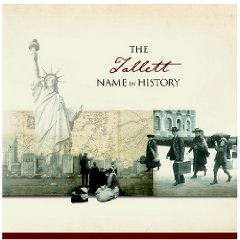

Tallett is an unusual name, where did it come from?
My best guess is that it originated somewhere in the West of England.
If you look up the word in some dictionaries the word tallett is an old English word meaning "hayloft" or barn.
There is a house in Marwood, Devon called "The Tallett" which is presumably a barn conversion.
It was recently advertised for sale on the Internet.
English surnames often originated as names of places for example,
Abraham Lincoln may have originated from Lincoln. If there had been more than one Abraham in the village then it
would be "Abraham who lives by the hayloft" eventually shortened to Abraham Tallett.
I found this on
Family Search round about GXJS-6CP, William Tallett, 1755-1827, Marriage: 2 July 1780, Newnham, Northamptonshire, England.
1 English: nickname; either a term of abuse, from Middle English tailarde ‘someone who has a tail’ (the devil?), or from Old French taillard, a sword for cutting (especially in fencing). For -et and -ot as a late development of -ard, compare Pickett .
2 English: relationship name, possibly from an unrecorded Old French personal name * Talot, * Talet, a diminutive form of Continental Germanic * Talo. Compare Tallon .
from the Dictionary of Family Names in Britain and Ireland © University of the West of England 2016
Then there is a place known as
Tallette in Chenango County, New York State, maybe that has something to do with us...
Here is Tallett Road, De Ruyter, New York, 13052.
But is there a
French Connection ... ?
Roger Tallett's christening in Bodmin Cornwall in 1595 is the oldest Tallett record I can find.
Richard Tallett - my great grandfather.
Alternate spellings of our family surname abound!
Tallet,
Tallit
